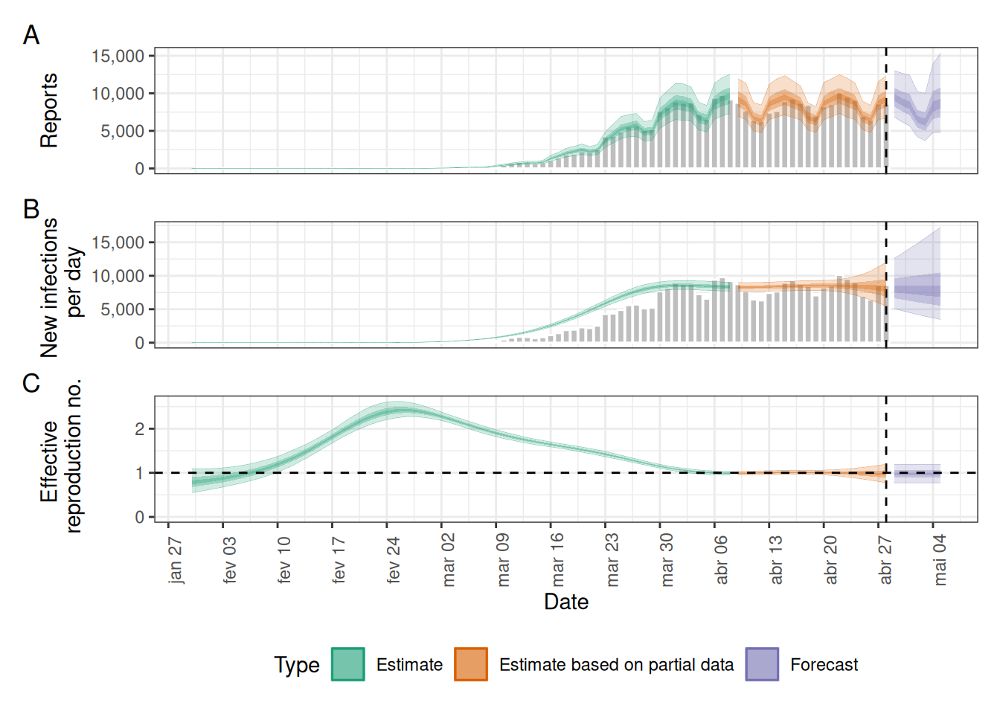
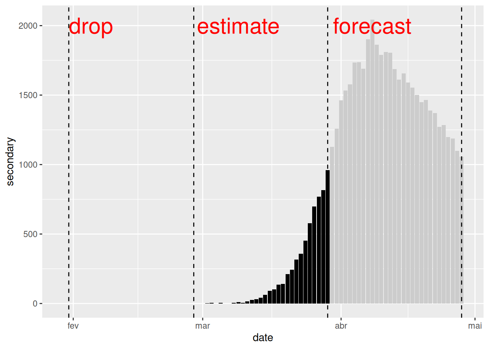
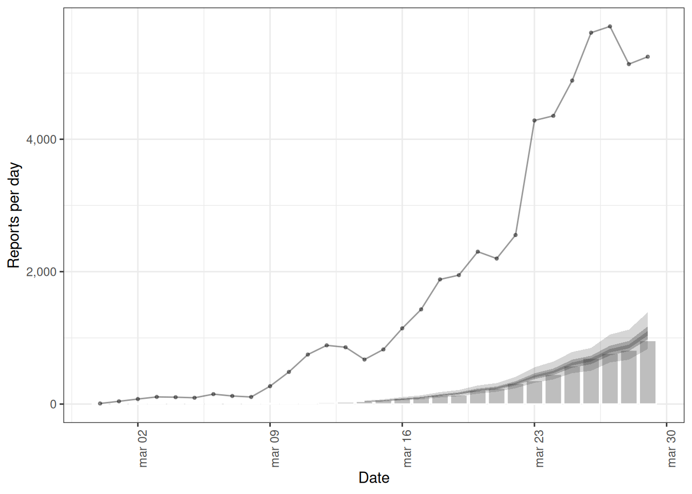
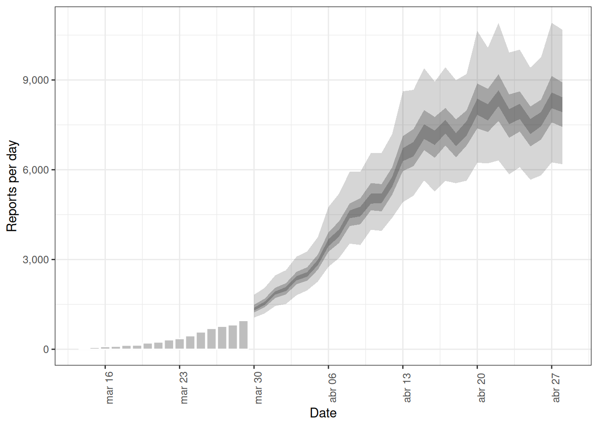

# Ler conjunto de dados de casos
cases <- incidence2::covidregionaldataUK %>%
# usar {tidyr} para pré-processar valores ausentes
tidyr::replace_na(base::list(cases_new = 0)) %>%
# usar {incidence2} para calcular a incidência diária
incidence2::incidence(
date_index = "date",
counts = "cases_new",
count_values_to = "confirm",
date_names_to = "date",
complete_dates = TRUE
) %>%
dplyr::select(-count_variable) # Descartar count_variable pois não é mais necessária
# Período de incubação
incubation_period_fixed <- EpiNow2::Gamma(
mean = 4,
sd = 2,
max = 20
)
# Média transformada em escala logarítmica
log_mean <- EpiNow2::convert_to_logmean(mean = 2, sd = 1)
# Desvio padrão transformado em escala logarítmica
log_sd <- EpiNow2::convert_to_logsd(mean = 2, sd = 1)
# Atraso de notificação
reporting_delay_fixed <- EpiNow2::LogNormal(
mean = log_mean,
sd = log_sd,
max = 10
)
# Tempo de geração
generation_time_fixed <- EpiNow2::LogNormal(
mean = 3.6,
sd = 3.1,
max = 20
)
# definir a distribuição a priori de Rt
rt_prior <- EpiNow2::rt_opts(prior = EpiNow2::LogNormal(mean = 2, sd = 2))Criar previsão de curto prazo
NotaPerguntas
- Como criar previsões de curto prazo a partir de dados de casos?
- Como levar em conta a notificação incompleta em previsões?
DicaObjetivos
- Aprender a fazer previsões de casos usando o pacote R
{EpiNow2} - Aprender a incluir um processo de observação na estimativa
ImportantePré-requisitos
Pré-requisitos
- Concluir o tutorial Quantificar transmissibilidade
Recomenda-se que as pessoas participantes se familiarizem com os seguintes conceitos antes de trabalhar neste tutorial:
Estatística: distribuições de probabilidade, princípios de análise bayesiana.
Teoria epidêmica: Número de reprodução efetivo.
Introdução
A partir de dados de casos de uma epidemia, podemos gerar estimativas do número atual e futuro de casos levando em conta tanto os atrasos de notificação quanto a subnotificação. Para fazer previsões sobre o curso futuro da epidemia, precisamos assumir uma premissa sobre como as observações até o presente se relacionam com o que esperamos que aconteça no futuro. A maneira mais simples de fazer isso é assumir “nenhuma mudança”, ou seja, que o número de reprodução permanece no futuro o mesmo observado mais recentemente. Neste tutorial, criaremos previsões de curto prazo assumindo que o número de reprodução permanecerá igual à sua estimativa na data final para a qual havia dados disponíveis.
Neste tutorial, aprenderemos como usar o pacote {EpiNow2} para prever casos levando em conta observações incompletas e prever observações secundárias, como óbitos.
Usaremos o operador pipe %>% para conectar funções, portanto vamos também carregar o pacote {tidyverse}:
library(EpiNow2)
library(tidyverse)
NotaChecklist
Os dois-pontos duplos
Os dois-pontos duplos :: no R permitem chamar uma função específica de um pacote sem carregar todo o pacote no ambiente atual.
Por exemplo, dplyr::filter(data, condition) usa filter() do pacote {dplyr}.
Isso nos ajuda a lembrar as funções dos pacotes e a evitar conflitos de espaço de nomes (namespaces).
Criar uma previsão de curto prazo
A função epinow() descrita no episódio quantificar transmissibilidade é um encapsulador (wrapper) para as funções:
estimate_infections(), usada para estimar casos por data de infecção.forecast_infections(), usada para simular infecções usando um ajuste existente (estimativa) aos casos observados.
Vamos usar o mesmo código utilizado no episódio quantificar transmissibilidade para obter os dados de entrada, atrasos e prioris:
Agora podemos extrair a previsão de curto prazo usando:
# Supor que temos apenas os primeiros 90 dias destes dados
reported_cases <- cases %>%
dplyr::slice(1:90)
# Estimar e prever
estimates <- EpiNow2::epinow(
data = reported_cases,
generation_time = EpiNow2::generation_time_opts(generation_time_fixed),
delays = EpiNow2::delay_opts(incubation_period_fixed + reporting_delay_fixed),
rt = rt_prior
)
NotaNão espere a conclusão desta etapa!
Este último bloco de código pode levar 10 minutos para rodar. Continue lendo este episódio do tutorial enquanto ele é executado em segundo plano. Para mais informações sobre o tempo de computação, leia a seção “Inferência bayesiana usando Stan” no episódio quantificar transmissibilidade.
Podemos visualizar as estimativas do número de reprodução efetivo e o número estimado de casos usando plot(). As estimativas são divididas em três categorias:
Estimate (verde): utiliza todos os dados,
Estimate based on partial data (laranja): contém maior grau de incerteza porque essas estimativas são baseadas em menos dados,
Forecast (roxo): projeta para o futuro.
plot(estimates)
Previsão com observações incompletas
No episódio quantificar transmissibilidade, levamos em conta os atrasos de notificação. No EpiNow2, também podemos levar em conta observações incompletas, já que, na realidade, 100% dos casos não são notificados. Passaremos um argumento adicional chamado obs para a função epinow() para definir um modelo de observação. O formato de obs é definido pela função obs_opt() (veja ?EpiNow2::obs_opts para mais detalhes).
NotaNo Brasil: subnotificação e atraso de digitação
A subnotificação varia muito conforme o agravo e o nível de atenção: casos leves podem passar fora do sistema, enquanto internações por SRAG ficam registradas no SIVEP-Gripe (Portal de Dados Abertos do SUS — SIVEP-Gripe). Como a base continua sendo atualizada, as semanas mais recentes ainda estão incompletas — e num modelo com fator de escala isso se confunde facilmente com queda real de transmissão. Escolher o scale com base em dados incompletos enviesa a previsão para baixo.
Suponhamos que acreditamos que os dados do surto de COVID-19 no objeto cases não incluem todos os casos notificados. Estimamos que apenas 40% dos casos reais são notificados. Para especificar isso no modelo de observação, devemos passar um fator de escala com média e desvio padrão. Se assumirmos que 40% dos casos são notificados (com desvio padrão de 1%), especificamos a entrada scale para obs_opts() da seguinte forma:
obs_scale <- EpiNow2::Normal(mean = 0.4, sd = 0.01)Para rodar a estrutura de inferência com este processo de observação, adicionamos obs = obs_opts(scale = obs_scale) aos argumentos de entrada de epinow():
# Definir modelo de observação
obs_scale <- EpiNow2::Normal(mean = 0.4, sd = 0.01)
# Supor que temos apenas os primeiros 90 dias destes dados
reported_cases <- cases %>%
dplyr::slice(1:90)
# Estimar e prever
estimates <- EpiNow2::epinow(
data = reported_cases,
generation_time = EpiNow2::generation_time_opts(generation_time_fixed),
delays = EpiNow2::delay_opts(incubation_period_fixed + reporting_delay_fixed),
rt = rt_prior,
# Adicionar modelo de observação
obs = EpiNow2::obs_opts(scale = obs_scale)
)
base::summary(estimates) measure estimate
<char> <char>
1: New infections per day 19969 (13094 -- 30159)
2: Expected change in reports Stable
3: Effective reproduction no. 0.97 (0.76 -- 1.2)
4: Rate of growth -0.012 (-0.096 -- 0.066)
5: Doubling/halving time (days) -59 (10 -- -7.2)As estimativas de medidas de transmissão, como o número de reprodução efetivo e a taxa de crescimento, são semelhantes (ou idênticas em valor) em comparação a quando não levamos em conta observações incompletas (veja o episódio quantificar transmissibilidade na seção “Obter estimativas”). No entanto, o número de novos casos confirmados por data de infecção mudou substancialmente em magnitude para refletir a premissa de que apenas 40% dos casos são notificados.
Também podemos alterar a distribuição padrão de Binomial Negativa para Poisson, remover o efeito padrão de dia da semana (que leva em conta padrões semanais na notificação) e muito mais. Veja ?EpiNow2::obs_opts para mais detalhes.
NotaNo Brasil: efeito de dia da semana
Antes de ajustar o modelo, olhe o gráfico da sua série diária. Oscilação em “dente de serra” é comum em bases de notificação e costuma vir de represamento de digitação em fins de semana e feriados, seguido de concentração de lançamentos nos dias úteis.
O efeito de dia da semana do modelo existe justamente para absorver esse padrão. Conferir o gráfico é o que diz se ele é necessário no seu caso — e um resíduo em dente de serra depois do ajuste costuma indicar que o termo não foi suficiente.
NotaDiscussão
Quais são as implicações desta alteração?
- Compare diferentes porcentagens de observações %
- Como elas diferem no número de infecções estimadas?
- Quais são as implicações desta alteração para a saúde pública?
Previsão de observações secundárias
O EpiNow2 também tem a capacidade de estimar e prever observações secundárias, por exemplo, óbitos e internações, a partir de uma observação primária, por exemplo, casos. Aqui ilustraremos como prever o número de óbitos decorrentes dos casos observados de COVID-19 nas fases iniciais do surto no Reino Unido.
Primeiro, devemos formatar nossos dados para que tenham as seguintes colunas:
date: a data (como um objeto de data, veja?is.Date()),primary: número de observações primárias nessa data, neste exemplo casos,secondary: número de observações secundárias nessa data, neste exemplo óbitos.
reported_cases_deaths <- incidence2::covidregionaldataUK %>%
# usar {tidyr} para pré-processar valores ausentes
tidyr::replace_na(base::list(cases_new = 0, deaths_new = 0)) %>%
# usar {incidence2} para calcular a incidência diária
incidence2::incidence(
date_index = "date",
counts = c(primary = "cases_new", secondary = "deaths_new"),
date_names_to = "date",
complete_dates = TRUE
) %>%
# reorganizar para formato largo (wide) para {EpiNow2}
pivot_wider(names_from = count_variable, values_from = count)
Utilizando os dados de casos e óbitos entre o dia 31 e o dia 60, estimaremos a relação entre as observações primárias e secundárias usando estimate_secondary() e, em seguida, preveremos os óbitos futuros usando forecast_secondary(). Para mais detalhes sobre o modelo, consulte a documentação do modelo.
Devemos especificar o tipo de observação usando type em secondary_opts(); as opções incluem:
- “incidence”: as observações secundárias decorrem de observações primárias anteriores, isto é, óbitos decorrentes dos casos registrados.
- “prevalence”: as observações secundárias decorrem de uma combinação de observações primárias atuais e observações secundárias passadas, isto é, a ocupação de leitos hospitalares decorrente de internações hospitalares atuais e da ocupação passada de leitos.
Neste exemplo, especificamos secondary_opts(type = "incidence"). Veja ?EpiNow2::secondary_opts para mais detalhes.
A última entrada fundamental é a distribuição de atraso entre as observações primárias e secundárias. Aqui, trata-se do atraso entre a notificação do caso e o óbito; assumimos que ele segue uma distribuição gama com média de 14 dias e desvio padrão de 5 dias (como alternativa, podemos usar {epiparameter} para acessar atrasos epidemiológicos). Usando Gamma(), especificamos uma distribuição gama fixa.
Há outras entradas da função estimate_secondary() que podem ser especificadas, incluindo a adição de um processo de observação; veja ?EpiNow2::estimate_secondary para detalhes sobre essas opções.
Para encontrar o ajuste do modelo entre casos e óbitos:
# Estimar do dia 31 ao dia 60 destes dados
cases_to_estimate <- reported_cases_deaths %>%
slice(31:60)
# Distribuição de atraso entre notificação de caso e óbitos
delay_report_to_death <- EpiNow2::Gamma(
mean = EpiNow2::Normal(mean = 14, sd = 0.5),
sd = EpiNow2::Normal(mean = 5, sd = 0.5),
max = 30
)
# Estimar casos secundários
estimate_cases_to_deaths <- EpiNow2::estimate_secondary(
data = cases_to_estimate,
secondary = EpiNow2::secondary_opts(type = "incidence"),
delays = EpiNow2::delay_opts(delay_report_to_death)
)
NotaTenha cautela com a escala temporal
Nas fases iniciais de um surto, podem ocorrer mudanças substanciais na testagem e na notificação. Se houver mudanças na testagem de um mês para o outro, haverá um viés no ajuste do modelo. Portanto, você deve ter cautela com a escala temporal dos dados utilizados no ajuste do modelo e na previsão.
Plotamos o ajuste do modelo (faixas sombreadas) com as observações secundárias (gráfico de barras) e as observações primárias (linha pontilhada) da seguinte forma:
plot(estimate_cases_to_deaths, primary = TRUE)Warning: Removed 14 rows containing missing values or values outside the scale range
(`geom_ribbon()`).
Removed 14 rows containing missing values or values outside the scale range
(`geom_ribbon()`).
Removed 14 rows containing missing values or values outside the scale range
(`geom_ribbon()`).
Para usar esse ajuste do modelo na previsão de óbitos, passamos um data frame composto pela observação primária (casos) para as datas que não foram utilizadas no ajuste do modelo.
Nota: neste episódio, estamos usando dados em que conhecemos os óbitos e os casos, de modo que criamos um data frame extraindo os casos. Mas, na prática, este seria um conjunto de dados diferente composto apenas por casos.
# Prever do dia 61 ao dia 90
cases_to_forecast <- reported_cases_deaths %>%
dplyr::slice(61:90) %>%
dplyr::mutate(value = primary)Para realizar a previsão, usamos o ajuste do modelo estimate_cases_to_deaths:
# Prever casos secundários
deaths_forecast <- EpiNow2::forecast_secondary(
estimate = estimate_cases_to_deaths,
primary = cases_to_forecast
)
plot(deaths_forecast)
O gráfico mostra as observações secundárias (óbitos) previstas ao longo das datas para as quais temos casos registrados. Também é possível prever óbitos utilizando previsões de casos; nesse caso, você especificaria primary como a saída estimates de estimate_infections().
NotaIntervalos de credibilidade
Em todas as figuras de saída do {EpiNow2}, as regiões sombreadas refletem intervalos de credibilidade de 90%, 50% e 20%, do mais claro ao mais escuro.
Desafio: análise do surto de Ebola
DicaDesafio
Baixe o arquivo ebola_cases.csv e leia-o no R. Os dados simulados consistem na data de início dos sintomas e no número de casos confirmados nas fases iniciais do surto de Ebola em Serra Leoa em 2014.
Usando os primeiros 3 meses (120 dias) de dados: 1. Estimar se os casos estão aumentando ou diminuindo no dia 120 do surto 2. Levar em conta uma capacidade de observar 80% dos casos. 2. Criar uma previsão de duas semanas do número de casos. Você pode usar os seguintes valores de parâmetros para a(s) distribuição(ões) de atraso e a distribuição do tempo de geração:
- Período de incubação: Log-normal\((2.487,0.330)\) (Eichner et al. 2011 via
{epiparameter}) - Tempo de geração: Gama\((15.3, 10.1)\) (WHO Ebola Response Team 2014)
Você pode incluir alguma incerteza em torno da média e do desvio padrão dessas distribuições.
NotaDica
Usamos o número de reprodução efetivo e a taxa de crescimento para estimar se os casos estão aumentando ou diminuindo.
Podemos usar o argumento horizon dentro de forecast_opts(), fornecido ao argumento forecast na função epinow(), para estender o período de tempo da previsão. O valor padrão é de sete dias.
Certifique-se de que os dados estejam no formato correto:
date: a data (como um objeto de data, veja?is.Date()),confirm: número de casos confirmados nessa data.
NotaSolução
Solução
Para estimar o número de reprodução efetivo e a taxa de crescimento, usaremos a função epinow().
Como os dados consistem na data de início dos sintomas, precisamos apenas especificar uma distribuição de atraso para o período de incubação e o tempo de geração.
Especificamos as distribuições com alguma incerteza em torno da média e do desvio padrão da distribuição log-normal para o período de incubação e da distribuição gama para o tempo de geração.
epiparameter::epiparameter_db(
disease = "ebola",
epi_name = "incubation"
) %>%
epiparameter::parameter_tbl()# Parameter table:
# A data frame: 5 × 7
disease pathogen epi_name prob_distribution author year sample_size
<chr> <chr> <chr> <chr> <chr> <dbl> <dbl>
1 Ebola Virus Dise… Ebola V… incubat… lnorm Eichn… 2011 196
2 Ebola Virus Dise… Ebola V… incubat… gamma WHO E… 2015 1798
3 Ebola Virus Dise… Ebola V… incubat… gamma WHO E… 2015 49
4 Ebola Virus Dise… Ebola V… incubat… gamma WHO E… 2015 957
5 Ebola Virus Dise… Ebola V… incubat… gamma WHO E… 2015 792ebola_eichner <- epiparameter::epiparameter_db(
disease = "ebola",
epi_name = "incubation",
author = "Eichner"
)
ebola_eichner_parameters <- epiparameter::get_parameters(ebola_eichner)
ebola_incubation_period <- EpiNow2::LogNormal(
meanlog = EpiNow2::Normal(
mean = ebola_eichner_parameters["meanlog"],
sd = 0.5
),
sdlog = EpiNow2::Normal(
mean = ebola_eichner_parameters["sdlog"],
sd = 0.5
),
max = 20
)
ebola_generation_time <- EpiNow2::Gamma(
mean = EpiNow2::Normal(mean = 15.3, sd = 0.5),
sd = EpiNow2::Normal(mean = 10.1, sd = 0.5),
max = 30
)Lemos os dados de entrada usando readr::read_csv(). Esta função reconhece que a coluna date é um vetor de classe <date>.
# ler dados
# ex.: se o caminho para o arquivo for data/raw-data/ebola_cases.csv, então:
ebola_cases_raw <- readr::read_csv(
here::here("data", "raw-data", "ebola_cases.csv")
)Pré-processar e adaptar os dados brutos para o {EpiNow2}:
ebola_cases <- ebola_cases_raw %>%
# usar {tidyr} para pré-processar valores ausentes
tidyr::replace_na(base::list(confirm = 0)) %>%
# usar {incidence2} para calcular a incidência diária
incidence2::incidence(
date_index = "date",
counts = "confirm",
count_values_to = "confirm",
date_names_to = "date",
complete_dates = TRUE
) %>%
dplyr::select(-count_variable)
dplyr::as_tibble(ebola_cases)# A tibble: 123 × 2
date confirm
<date> <dbl>
1 2014-05-18 1
2 2014-05-19 0
3 2014-05-20 2
4 2014-05-21 4
5 2014-05-22 6
6 2014-05-23 1
7 2014-05-24 2
8 2014-05-25 0
9 2014-05-26 10
10 2014-05-27 8
# ℹ 113 more rowsDefinimos um modelo de observação para ajustar a escala do número estimado e previsto de novas infecções:
# Definir modelo de observação
# média de 80% e desvio padrão de 1%
ebola_obs_scale <- EpiNow2::Normal(mean = 0.8, sd = 0.01)Como queremos criar também uma previsão de duas semanas, especificamos horizon = 14 para prever 14 dias em vez dos 7 dias padrão.
ebola_estimates <- EpiNow2::epinow(
data = ebola_cases %>% dplyr::slice(1:120), # apenas os primeiros 3 meses de dados
generation_time = EpiNow2::generation_time_opts(ebola_generation_time),
delays = EpiNow2::delay_opts(ebola_incubation_period),
# Adicionar modelo de observação
obs = EpiNow2::obs_opts(scale = ebola_obs_scale),
# o horizonte precisa ser de 14 dias para criar uma previsão de duas semanas (o padrão é 7 dias)
forecast = EpiNow2::forecast_opts(horizon = 14)
)
summary(ebola_estimates) measure estimate
<char> <char>
1: New infections per day 114 (51 -- 713214)
2: Expected change in reports Increasing
3: Effective reproduction no. 1.8 (1.2 -- 10)
4: Rate of growth 0.053 (0.0085 -- 0.13)
5: Doubling/halving time (days) 13 (5.3 -- 82)A estimativa do número de reprodução efetivo \(R_t\) (na última data dos dados) é 1.8 (1.2 – 10). A taxa de crescimento exponencial do número de casos é 0.053 (0.0085 – 0.13).
Visualizar as estimativas:
plot(ebola_estimates)
NotaPrevisão com estimativas de \(R_t\)
Por padrão, as previsões de curto prazo são criadas utilizando a estimativa mais recente do número de reprodução \(R_t\). Como essa estimativa é baseada em dados parciais, ela apresenta incerteza considerável.
O número de reprodução projetado para o futuro pode ser alterado para uma estimativa menos recente baseada em mais dados usando rt_opts():
EpiNow2::rt_opts(future = "estimate")O resultado serão previsões com menor incerteza (pois são baseadas em um \(R_t\) com um intervalo de incerteza mais estreito), mas as previsões serão baseadas em estimativas menos recentes de \(R_t\) e assumirão que não houve mudanças desde então.
Além disso, há a opção de projetar o valor de \(R_t\) para o futuro usando um modelo genérico, definindo future = "project". Como essa opção utiliza um modelo para prever o valor de \(R_t\), o resultado serão previsões com maior incerteza do que com estimate; para um exemplo, veja aqui.
Resumo
O {EpiNow2} pode ser usado para criar previsões de curto prazo e para estimar a relação entre diferentes desfechos. Há uma variedade de opções de modelo que podem ser implementadas para diferentes análises, incluindo a adição de um processo de observação para levar em conta a notificação incompleta. Consulte a vinheta para mais detalhes sobre diferentes opções de modelo no {EpiNow2} que não são abordadas nestes tutoriais.
NotaPontos-chave
- Podemos criar previsões de curto prazo assumindo premissas sobre o comportamento futuro do número de reprodução
- A notificação incompleta de casos pode ser levada em conta nas estimativas